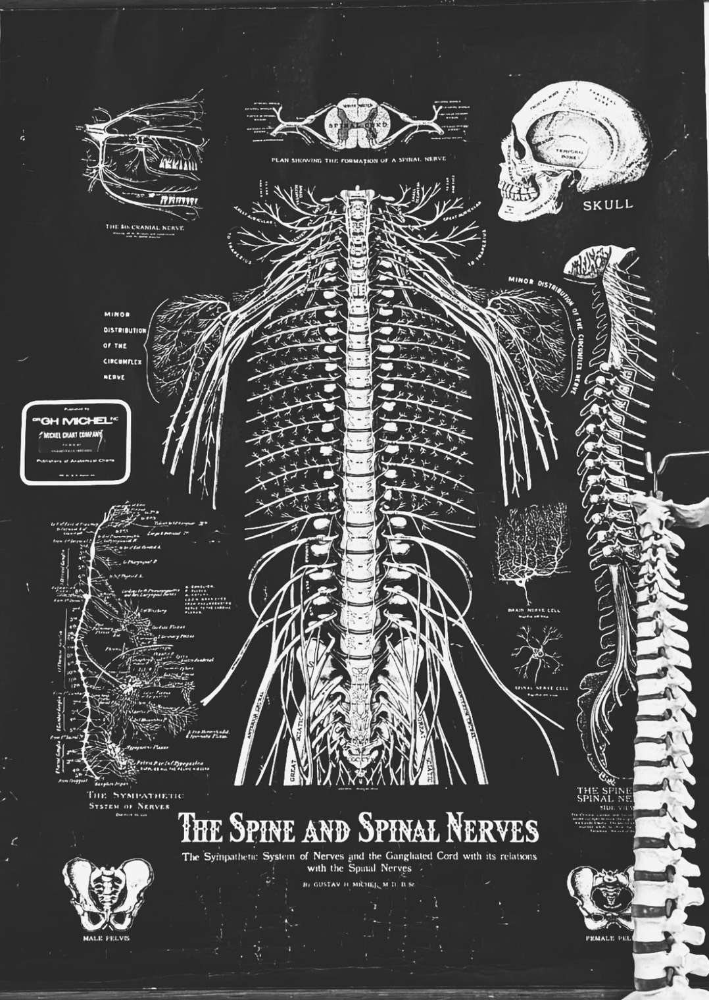
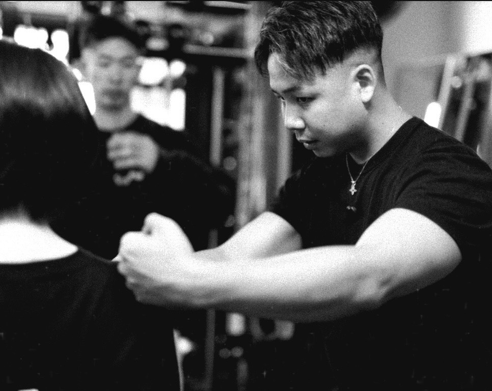
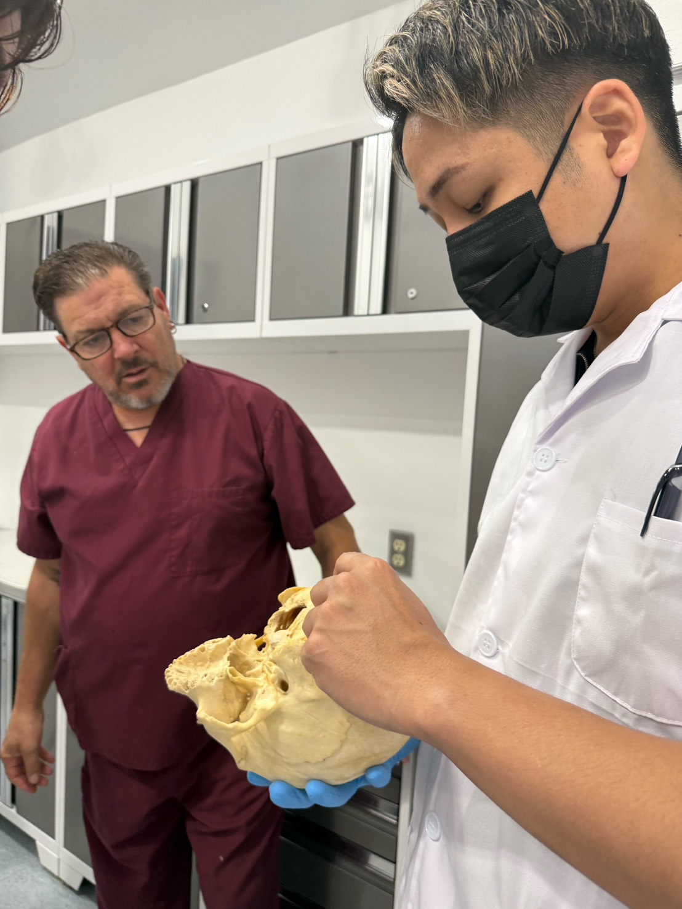
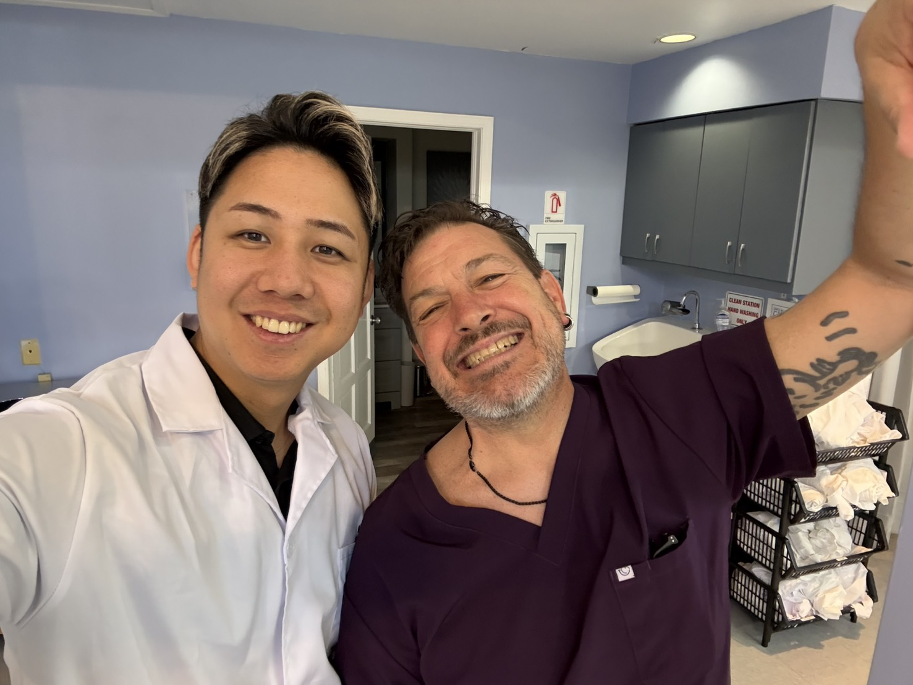
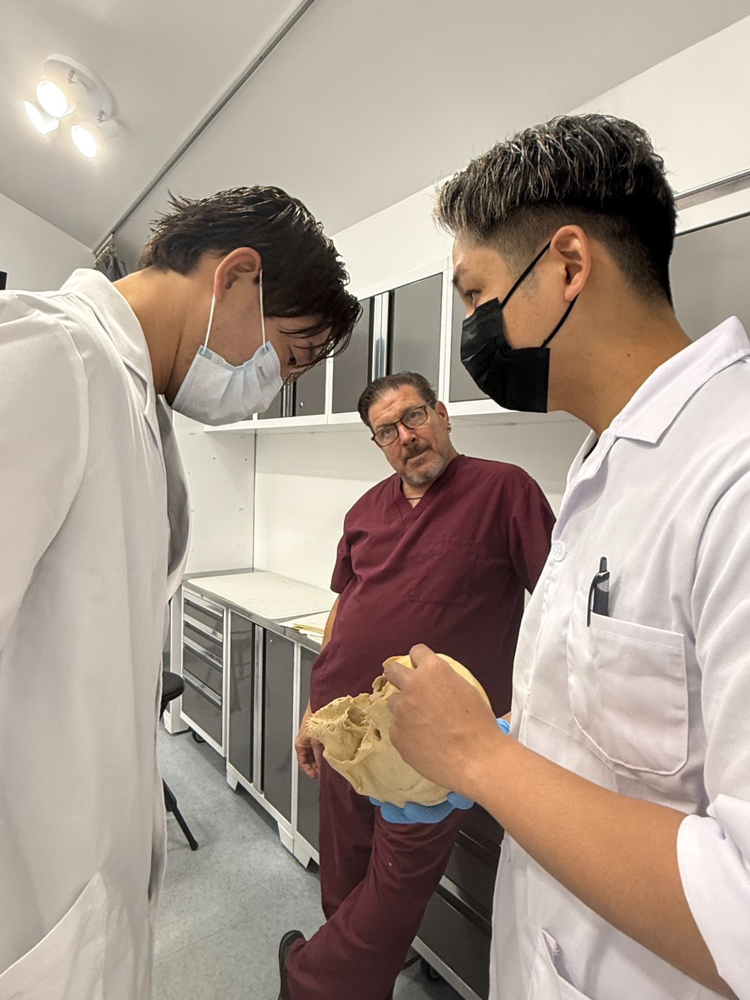

零とは
既存の流派に依存しない。
西洋医学。
東洋医学。
オステオパシー。
カイロプラクティック。
トレーニング。
神経科学。
経絡。
運動療法。
全てを統合し
“身体の本質”へ到達するための
統合型コンディショニング。
人は 壊れているのではない。
忘れているだけだ。
本来の状態を。
型を超え 身体の本質へ。
零とは
既存の流派に依存しない。
西洋医学。
東洋医学。
オステオパシー。
カイロプラクティック。
トレーニング。
神経科学。
経絡。
運動療法。
全てを統合し
“身体の本質”へ到達するための
統合型コンディショニング。
身体は “部分”ではなく“システム”である。
零には
決まった型がない。
なぜなら
人の身体に
絶対的な正解は存在しないから。
必要なのは
“今その人に必要な刺激”。
零は
身体を“零”へ戻し
そこから再学習させる。
痛みを取るだけでは
人は変わらない。
零が目指すのは
つまり
「身体が持つ 本来の機能」
その解放。


HARAGUCHI NORIATSU
TOTAL BODY FITNESS THEORY代表
パーソナルトレーナー / コンディショニングトレーナー / 整体師
私は
一つの流派だけを信じてきた人間ではない。
西洋医学。東洋医学。オステオパシー。カイロプラクティック。トレーニング。神経科学。経絡。内臓。頭蓋。
12年以上
身体を“部分”ではなく
“システム”として見続けてきた。
なぜ
同じ症状でも改善する人としない人がいるのか。
なぜ
筋肉を緩めても戻るのか。
なぜ
鍛えても壊れるのか。
その答えを追い続けた先に辿り着いたのが
「零」
という考え方だった。
型に縛られない。
流派に依存しない。
必要なのは
“今その人に必要な刺激”。
身体を零へ戻し
そこから本来の機能を再学習させる。
それが
私の目指すコンディショニング。



身体の「真実」を知るために。
私が人体解剖実習を重ねる理由。
それは、生きた身体の「真実」を知りたいからに他ならない。
お客様の身体をお預かりするプロとして、
確かなエビデンスと、リアルな構造を深く把握することは当然の責任である。
あくなき探求の果てに、アメリカやタイでの解剖実習はすでに5回を数える。
あなたの身体は
まだ眠ったままだ。